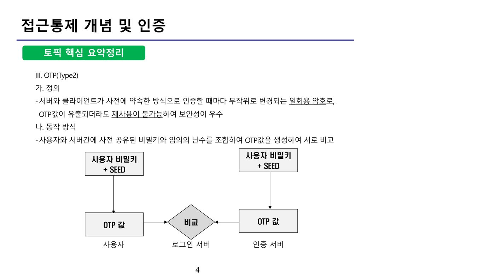
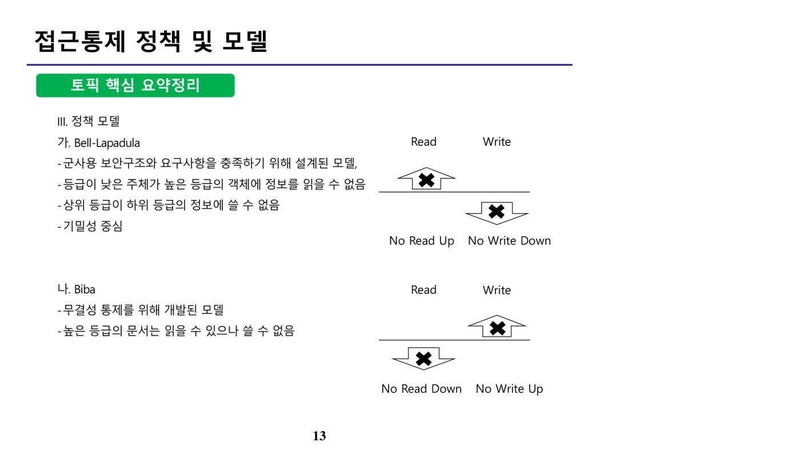
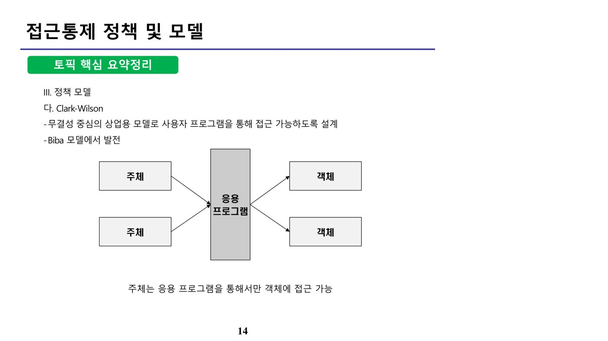

접근통제(Access Control)는 비인가자가 정보시스템의 자원에 접근하는 것을 제한하는 보안 활동으로, 사용자를 식별(Identification)하고 인증(Authentication)한 뒤 그에 맞는 권한을 부여(Authorization)하는 3단계로 구성된다. 식별은 사용자가 자신의 신원정보를 밝히는 단계, 인증은 그 신원정보의 유효성을 확립하는 단계, 인가는 식별·인증된 사용자에게 자원에 대한 적절한 접근 권한을 허용하는 단계다. 접근통제의 기본 원리로는 최소권한(Least Privilege) 원칙과 직무분리(Separation of Duty) 원칙이 있으며, 대표 정책으로 MAC·DAC·RBAC이, 대표 정책 모델로 Bell-LaPadula·Biba·Clark-Wilson이 있다.
나. 인증 방식(Type 1~4)
유형
내용
Type 1 (지식 기반, Something you know)
사용자가 알고 있는 정보를 통해 인증 — 패스워드(Password)
Type 2 (소유 기반, Something you have)
사용자가 보유하고 있는 물건을 통해 인증 — OTP(One Time Password), 키(Key) 등
Type 3 (생체 기반, Something you are)
사용자의 생체 정보를 통해 인증 — 망막, 홍채, 지문 등
Type 4 (행동 기반, Something you do)
사용자의 행동적 특성에 따른 인증 — 발걸음, 말투, 서명 등
다. OTP(Type 2)
OTP(One Time Password)는 서버와 클라이언트가 사전에 약속한 방식으로 인증할 때마다 무작위로 변경되는 일회용 암호로, OTP 값이 유출되더라도 재사용이 불가능하여 보안성이 우수하다. 동작 방식은 사용자와 서버 간에 사전 공유된 비밀키(Seed)와 임의의 난수를 조합하여 각자 OTP 값을 생성한 뒤, 사용자 측 OTP 값과 인증 서버 측 OTP 값을 서로 비교하여 일치 여부로 인증을 수행한다.

[그림] OTP 동작 방식 — 사용자·인증서버가 공유 비밀키+SEED로 각자 OTP 값을 생성해 상호 비교
유형
내용
시간 기반(Time Synchronization)
서버와 OTP 장치 간에 동기화된 시간 정보를 기준으로 비밀번호 생성
이벤트 기반(Event Synchronization)
서버와 OTP 장치가 동일한 카운트 값을 기준으로 비밀번호 생성
하이브리드(Hybrid)
시간 동기화 방식 + 이벤트 동기화 방식을 결합. 특정 시간 간격마다 비밀번호를 생성하되, 같은 시간 내 재시도는 카운트 값을 증가시켜 비밀번호를 변경
질의응답(Challenge-Response)
사용자가 요청할 때마다 서버가 제시하는 질의(challenge)에 따라 비밀번호 생성
라. 생체인증(Type 3)
생체인증(Biometrics)이 갖춰야 할 요건은 다음과 같다.
특징
설명
보편성(Universality)
모든 사람들이 지니고 있어야 함
유일성(Uniqueness)
동일한 특징을 가진 사람이 없어야 함
지속성(Permanence)
시간이 지나도 특징이 지속되어야 함
획득성(Collectability)
측정이 가능해야 함
성능(Performance)
높은 정확성을 얻을 수 있어야 함
수용성(Acceptability)
사용자가 인증받는 데 거부감이 없어야 함
기민성(Circumvention)
고의적인 부정사용으로부터 안전해야 함
생체인증의 정확도는 다음 지표로 측정한다.
지표
설명
FRR(False Rejection Rate)
정당한 사용자가 잘못 거절될 확률(1종 오류)
FAR(False Acceptance Rate)
인식되어서는 안 될 사람이 잘못 허용될 확률(2종 오류) — 기밀성 측면에서 더 치명적
EER, CER(Equal/Crossover Error Rate)
FAR과 FRR이 서로 교차하는 지점의 오류율. 이 값이 낮을수록 인증 시스템의 성능이 우수
💡 Tip · 오답 포인트FAR(부정허용율)은 인식되면 안 될 사람이 인식되는 2종 오류이고, FRR(부정거부율)은 정당한 사용자가 거부되는 1종 오류다 — 문제에서 "인식되어서는 안 될 사람이 인식되는 비율"을 물으면 FAR이 정답이다.
마. 접근통제 정책(MAC · DAC · RBAC)
정책
설명
MAC(Mandatory Access Control, 강제적 접근통제)
사용자나 자원 모두 보안 레벨(등급)을 부여받아 접근 허용 여부를 결정. 객체의 소유자가 임의로 변경할 수 없는, 주체와 객체 간의 관계를 정의
DAC(Discretionary Access Control, 임의적 접근통제)
주체나 그룹의 신분에 근거하여 객체에 대한 접근을 제한. 허가된 주체(객체 소유자)에 의해 변경 가능한 객체 간의 관계를 정의
RBAC(Role Based Access Control, 역할기반 접근통제)
조직 내에서 맡은 역할(Role)을 기반으로 자원에 대한 접근 허용 여부를 결정
2. 접근통제 정책 및 모델 (원본 p.13-23)
가. 접근통제 정책 모델

[그림] Bell-LaPadula(No Read Up·No Write Down) vs Biba(No Read Down·No Write Up) 규칙 비교

[그림] Clark-Wilson 모델 — 주체는 응용 프로그램을 통해서만 객체에 접근 가능
모델
설명
Bell-LaPadula(BLP)
군사용 보안구조와 요구사항을 충족하기 위해 설계된 기밀성 중심 모델. 등급이 낮은 주체가 높은 등급의 객체를 읽을 수 없고(No Read Up), 상위 등급 주체가 하위 등급 객체에 쓸 수 없다(No Write Down)
Biba
무결성 통제를 위해 개발된 모델. 높은 등급의 문서는 읽을 수 있으나 쓸 수 없다 — 등급이 낮은 주체가 높은 등급 객체를 쓸 수 없고(No Write Up), 높은 등급 주체가 낮은 등급 객체를 읽을 수 없다(No Read Down)
Clark-Wilson
Biba 모델에서 발전한 무결성 중심의 상업용 모델로, 사용자(주체)가 데이터(객체)에 직접 접근하지 못하고 반드시 응용 프로그램(Well-formed Transaction)을 통해서만 접근하도록 설계
Take-Grant
주체가 가진 권리가 다른 주체·객체로 전달(take, grant)될 수 있는 경로를 방향 그래프로 표현하는 모델
💡 Tip · 오답 포인트
BLP는 기밀성(No Read Up·No Write Down), Biba는 무결성(No Read Down·No Write Up) — 두 모델의 Read/Write 방향을 서로 뒤바꿔 서술하는 것이 전형적 오답이다.
커버로스는 대칭키를 사용하는 티켓 기반의 중앙집중형 사용자 인증 메커니즘으로, MIT에서 개발한 Needham-Schroeder 프로토콜을 기반으로 한다. 키 분배 서버인 KDC(Key Distribution Center)는 인증을 수행하는 AS(Authentication Server)와 티켓을 발급하는 TGS(Ticket Granting Service)로 구성된다.
단계
내용
① 클라이언트 → AS
사용자 패스워드 기반 인증 요청
② AS → 클라이언트
TGS 접근을 위한 인증값(TGT, Ticket Granting Ticket) 발급
③ 클라이언트 → TGS
발급받은 인증값(TGT)을 제시하며 서비스 이용을 요청
④ TGS → 클라이언트
목적 서버 접근을 위한 서비스 티켓 발급
⑤ 클라이언트 → 서버
서비스 티켓을 제시
⑥ 서버 → 클라이언트
티켓 검증 후 접근 허용
커버로스는 타임스탬프를 이용해 재전송(Replay) 공격을 방지하며, RFC 표준으로 키 분배뿐 아니라 사용자 인증 기능도 함께 제공한다. 다만 대칭키 암호 방식을 사용하므로, 공개키 인증서 발급이나 상대방의 공개키를 안전하게 배포하는 기능은 제공하지 않는다.
💡 Tip · 오답 포인트커버로스는 대칭키 암호 시스템을 사용한다 — "공개키에 대한 공인인증 기능을 제공한다"거나 "상대방의 공개키를 안전하게 수신한다"는 서술은 오답이다.
📚 전체 기출·예상문제 (12문항) — 원문 수록
본 강좌 원본 PDF에 수록된 기출·예상문제를 문항별로 재구성했습니다. 원본에는 한 페이지에 서로 다른 두 문제가 뒤섞여 추출되어 있던 부분을 분리했으며, 문항별 정답은 원문의 O/X 해설과 대조하여 검증했습니다.
Q1. [2010년 기출] One Time Password에 대한 설명 중 옳은 것을 모두 고르시오. (원본 p.8-9)
a, b
a, d
b, c
c, d
정답 ② a, d — a. 일회용 패스워드이다(O). b. 재연(Replay) 공격에 취약하다(X, 재사용이 불가능하므로 취약하지 않음). c. 암호가 도청될 시 문제가 된다(X, 도청되어도 재사용이 불가능하므로 문제되지 않음). d. 인증하는 두 호스트가 같은 패스워드 목록(비밀키)을 공유해야 한다(O). ※ 원본 자료에는 정답이 ③으로 표기되어 있으나, 함께 제시된 각 보기의 O/X 해설과 OTP의 특성(재사용 불가·도청 안전)에 근거하면 정답은 ②(a, d)가 되어야 하므로 바로잡았습니다.
Q2. [2010년 기출] 다음에서 서술하고 있는 보안 프로토콜은 무엇인가? — 클라이언트가 서버를 신뢰할 수 없는 상황에서 사용할 수 있는 프로토콜이다. 사용자는 비밀 정보를 서버에게 노출하지 않으면서 비밀 정보를 알고 있다는 사실을 서버에게 확신시킴으로써 인증받는 방식이다. 임의의 높은 확률로 비밀을 알고 있다는 사실을 입증하는 확률적인 과정이 존재한다. (원본 p.8-9)
영 지식(Zero-Knowledge) 증명
시도-응답(Challenge-Response) 방식
일회용 패스워드 방식
PFS(Perfect Forward Secrecy)
정답 ① 영 지식(Zero-Knowledge) 증명 — 비밀 정보 자체를 노출하지 않으면서 그것을 알고 있다는 사실만 확률적으로 입증하는 방식이 핵심 특징이다. 참고로 PFS(완전 순방향 비밀성)는 비밀키가 노출되어도 이후 세션키의 안전성에는 영향을 주지 않는 성질을 말한다.
Q3. [2015년 기출] 스마트카드를 이용하여 동적 데이터 인증 과정을 수행하기 위해 스마트카드 단말기에 배포되어야 하는 것은? (원본 p.10-11)
인증기관(CA)의 공개키
스마트카드의 개인키
응용 프로그램 데이터와 스마트카드 공개키에 대해 발행자의 개인키를 이용하여 서명한 값
발행자의 공개키에 대해 인증기관(CA)의 개인키를 이용하여 서명한 값
정답 ① 인증기관(CA)의 공개키 — 단말기는 카드가 제시하는 서명값을 검증해야 하므로 CA의 공개키를 미리 갖고 있어야 한다. 개인키(②)는 본인만 알아야 하는 정보이므로 단말기에 배포될 수 없다.
Q4. [2014년 기출] 다음 생체인식(biometrics)의 정확도를 측정하는 매개변수 중 인식되어서는 안 될 사람이 얼마나 자주 시스템에 의해서 인식되는지를 나타내는 것은? (원본 p.10-11)
정상 거부율(TRR: True Rejection Rate)
부정 거부율(FRR: False Rejection Rate)
정상 허용율(TAR: True Acceptance Rate)
부정 허용율(FAR: False Acceptance Rate)
정답 ④ 부정 허용율(FAR) — 인식되어서는 안 될 사람이 인식되는 것은 2종 오류(FAR)이며, 이는 기밀성 침해로 이어질 수 있어 보안상 더 치명적으로 간주된다.
Q5. [2010년 기출] 다음은 보안 정책의 원리 중 하나에 대한 설명이다. 서로 상충되는 두 가지 업무를 한 사람이 겸임하여 수행하지 못하도록 직무를 분산시키는 원리에 해당하는 것은? (원본 p.15-16)
최소권한 정책
권한 분산
임무분리(직무분리)
권한 위임
정답 ③ 임무분리(직무분리) — 보안 정책의 대표 원리는 최소권한 정책과 임무분리(직무분리) 원칙이며, 서로 상충되는 두 업무(예: 세금 고지 업무와 세금 수납 업무)를 한 사람에게 맡기지 않는 것이 대표적인 직무분리 사례다.
Q6. [2013년 기출] 기존의 접근통제에서는 모든 사용자 개개인의 접근통제 규칙을 보유하였지만, 이것이 효율적이지 못할 뿐만 아니라 때로 보안 사고의 원인이 되었다. 따라서 보안 관리자는 시스템에 접근하는 사용자들을 직책 및 보직을 기반으로 통제하고자 한다(예: 세금 고지 업무와 세금 수납 업무를 같은 사람에게 맡기지 않는다). 다음 설명에 가장 적절한 접근 통제 방법은? (원본 p.15-16)
임의적 접근통제
강제적 접근통제
역할기반 접근통제
다계층 접근통제
정답 ③ 역할기반 접근통제(RBAC) — 직책 및 보직(역할)을 기반으로 접근을 통제하는 방식이 RBAC의 정의에 해당한다.
Q7. [2011년 기출] 다음 역할기반 접근제어 모델(RBAC)에 관한 설명 중 가장 적절하지 않은 것은? (원본 p.17-18)
권한을 역할과 연관시키고 사용자들이 적절한 역할을 할당받도록 하여 권한의 관리를 용이하게 한다.
권한은 사용자집합과 역할집합의 매개체 역할을 한다.
사용자는 조직의 구성원이나 프로세스 등 조직의 자원에 대한 접근을 요청하는 모든 개체이다.
권한은 조직의 자원에 대한 오퍼레이션의 관계를 추상화시킨 개체이다.
정답 ② — RBAC 구조에서 사용자와 역할 사이의 매개체는 "권한"이 아니라 "역할(Role)" 그 자체이며, 권한(Permission)은 역할에 부여되는 오퍼레이션-자원 관계를 의미하므로 ②의 서술이 부적절하다.
Q8. [2012년 기출] 임의적 접근통제(DAC)와 강제적 접근통제(MAC)에 관한 설명 중 가장 거리가 먼 것은? (원본 p.17-18)
DAC는 객체 소유자에게 그 객체에의 접근권한을 제어하는 능력을 제공해주는 방법으로 구현된다.
MAC은 높은 보안을 요하는 정보가 낮은 보안수준의 주체에게 노출되지 않도록 접근을 제한한다.
DAC은 특정한 사용자 그룹이나 사용자에 한해서 액세스를 부여 또는 제한하는 방법이다.
MAC은 다른 사람에게 나의 권한을 나누어 주거나 막을 수 있도록 옵션(revoke, grant)을 주어서 행한다.
정답 ④ — 권한을 다른 사람에게 나누어 주거나 회수(revoke·grant)할 수 있는 것은 객체 소유자가 권한을 통제하는 DAC의 특징이며, 보안관리자가 일괄 지정하는 MAC에는 해당하지 않는다.
Q9. [2010년 기출] 사용자가 직접 객체에 접근할 수 없고 프로그램을 통해서만 객체에 접근할 수 있게 하는 보안 모델은? (원본 p.19-20)
Clark-Wilson 모델
Biba 모델
Bell-LaPadula 모델
모두 정답
정답 ① Clark-Wilson 모델 — 무결성 중심의 상업용 모델로, 주체가 응용 프로그램(Well-formed Transaction)을 통해서만 객체에 접근하도록 한다. Biba는 No Write Up, Bell-LaPadula는 No Read Up·No Write Down 속성을 가진 모델이다.
Q10. [2012년 기출] 다음 중 상위 등급의 주체가 하위 등급의 객체에 정보의 쓰기를 수행할 수 없도록 하는 속성(no write-down 속성)을 가진 보안 모델은? (원본 p.19-20)
Take-Grant 모델
Biba 모델
Clark-Wilson 모델
Bell-LaPadula 모델
정답 ④ Bell-LaPadula 모델 — No Write Down(상위 등급 주체가 하위 등급 객체에 쓰기 금지)과 No Read Up 속성을 가진 기밀성 중심 모델이다. Take-Grant는 권리 전달을 방향 그래프로 표현하는 모델, Biba는 No Write Up 속성을 가진 모델, Clark-Wilson은 프로그램을 통해서만 객체에 접근하는 모델이다.
Q11. [2013년 기출] 다음 중 Kerberos 시스템에 대한 설명으로 가장 거리가 먼 것은? (원본 p.22-23)
공개키 암호 시스템에서 사용되는 공개키에 대한 공인인증 기능을 제공한다.
Needham-Schroeder 프로토콜을 기반으로 개발되었으며 키 분배 기능을 제공한다.
키 분배센터(KDC)는 인증 서버(AS)와 티켓 발급 서버(TGS)로 구성된다.
키 분배센터(KDC)를 중심으로 인증 기능과 세션키를 발급하는 기능을 제공한다.
정답 ① — 커버로스는 공개키가 아니라 대칭키 암호 시스템을 사용하므로, 공인인증 기능을 제공한다는 서술은 옳지 않다.
Q12. [2016년 기출] 다음 중 커버로스에 대한 설명으로 가장 거리가 먼 것은? (원본 p.22-23)
커버로스는 키분배센터(KDC: Key Distribution Center) 기반의 키 관리를 수행한다.
커버로스는 타임스탬프를 이용하여 재전송 공격을 방지한다.
커버로스는 RFC 표준으로 키분배뿐만 아니라 사용자 인증을 제공한다.
커버로스를 이용하여 사용자는 키분배 센터로부터 상대방의 공개키를 안전하게 수신한다.
정답 ④ — 커버로스는 대칭키 암호 방식을 사용하므로 "상대방의 공개키를 안전하게 수신"하는 기능은 제공하지 않는다.